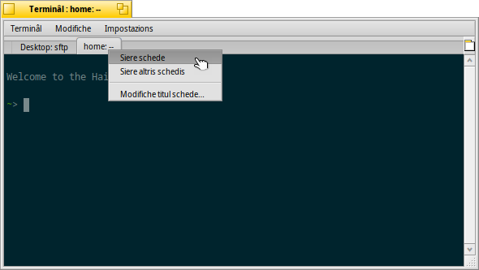
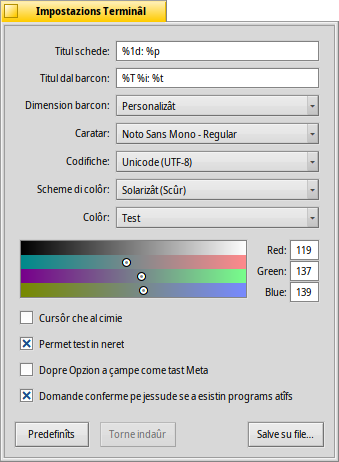

Terminâl
Terminâl
| Deskbar: | ||
| Posizion: | /boot/system/apps/Terminal | |
| Impostazions: | ~/config/settings/Terminal ~/config/settings/profile - al zonte/sorescrîf i predefinîts in /boot/system/settings/etc/profile ~/config/settings/inputrc - al zonte/sorescrîf i predefinîts in /boot/system/settings/etc/inputrc |
Il Terminâl al è la interface bash di Haiku, la Bourne Again Shell.
Par plasê fâs riferiment al argoment Scripting par cualchi colegament e lezion in rêt su ce mût che si lavore te shell e bute ancje un voli su Aplicazions a rie di comant di Haiku. Achì si concentrarìn te aplicazion Terminâl.
 Barcons e schedis
Barcons e schedis
Tu puedis vierzi tancj Terminâi che ti servin. Tu puedis fâ che ognun al vedi il so barcon, inviant in maniere semplice plui Terminâi o fracant ALT N suntun Terminâl za viert. Opûr tu puedis doprâ la viodude a schedis dal Terminâl e vierzi plui schedis cun ALT T.
Fasint dopli clic inte part vueide de sbare des schedis, al vierzarà une gnove schede; dopli clic suntune schede al vierzarà un dialic par cambiâ non al so titul. Si à diviersis variabilis designadis cun % che a vegnin spiegadis cuntun sugjeriment cuant che cul mouse tu passis parsore dal cjamp di test.
In maniere predefinide, %1d: %p, une schede e mostre la cartele atuâl e, separade di un :, il non dal procès che in chel moment al è in esecuzion (o -- se al sta zirant dome bash, magari inatîf). La videade parsore e mostre la prime schede cuntune session FTP inte cartele Desktop e une seconde schede inative su home.
Cun inte stesse maniere si pues modificâ il titul dal barcon dal Terminal.
Fasint clic diestri suntune schede al ven mostrâ un menù contestuâl che ti permet di fâ , o, come cul dopli clic, .
Un barcon di Terminâl al pues jessi ridimensionât tant che cualsisei altri barcon opûr tu puedis doprâ i valôrs prestabilîts dal menù . ALT INVIE al comute la modalitât plen visôr.
Dutis lis impostazions che tu cambiis in maniere direte midiant il menù , come il , , o a vegnin tignudis dome pe session atuâl. Se tu desideris rindi permanentis lis modifichis, tu âs di aplicâlis intal panel .
Impostazions
al vierç un panel par configurâ lis impostazions standard di un Terminâl.
La plui part des impostazions ufiertis no àn bisugne di spiegazions. No dal dut clare invezit e je la dimension dal caratar che e ven stabilide intal sot-menù dal menù a tende .
Se tu passis parsore cul mouse aes "formulis" par dâ un non ai titui des schedis e dai barcons al vignarà fûr un sugjeriment cu lis variabilis disponibilis.
Tu puedis sielzi il scheme di colôrs predefinît come o o creâ'nt un selezionant il colôr che tu desideris cambiâ (, , e vie indenant.) e duncje doprant il seletôr di colôr sot.
Pocjis altri opzions a vegnin dopo: tu puedis vê un (par fâ in mût che al lampi) e sielzi .
se tu lavoris cun determinâts software UNIX che si base sul acès a une porzion estese dal complès di caratars ASCII, come p.e. GNU Emacs e la librarie GNU readline.
Ativâ la casele di selezion ti visarà cuant che si cîr di sierâ un barcon di Terminâl intant che une aplicazion e je ancjemò in esecuzion.
| ti permet di salvâ lis impostazions diferentis come profîi separâts, che cuntun dopli-clic a vierzaran un Terminâl configurât in chê maniere. | ||
| al puarte indaûr lis impostazions a chês che a jerin ativis cuant che si à viert il panel des impostazions. | ||
| al torne a puartâ dut ai valôrs predefinîts. |
Scurtis di tastiere
Tu cjatarâs une liste di scurtis utilis in Scurtis e cumbinazions di tascj.
Une altre funzionalitât ninine che e je plui une cumbinazion di tascj e mouse: Cuant che si ten fracât ALT un percors o un URL che al sta sot dal pontadôr dal mouse al devente evidenziât. Un clic di çampe al vierç il file/cartele/sît web. Un clic di diestre al vierç un menù contestuâl che ti permet di fâ o o . Fâs fente di jessi in /MyData/source/haiku/ e vê il percors generated/objects/haiku/x86_gcc2/release/apps/stylededit/StyledEdit sot dal pontadôr dal mouse, l'ultin element dal menù al darà come risultât il percors cumbinât cun chel assolût <fâs un biel respîr>:
/MyData/source/haiku/generated/objects/haiku/x86_gcc2/release/apps/stylededit/StyledEdit.
Se tu tegnis fracât ALT MAIUSC, al vignarà evidenziât dome il toc di percors che, partint dal inizi, al rive fin dulà che si cjate il pontadôr dal mouse.
A proposit, fasint clic diestri intal barcon dal Terminâl si inserirà ce che si à intes notis. Cumbinant lis parts pe copie e evidenziazion dai percors, si pues sveltî la navigazion di jerarchiis di cartelis profondis.
Personalizazion di Bash
Rivant di Unix, si à tantis pussibilitâts di personalizâ bash che nissun sa. A son doi file che a son impuartants soredut pal utent: profile e inputrc
Si puedin creâ ducj i doi i file inte cartele/boot/home/config/settings/ e zontâ o sorescrivi i predefinîts di sisteme che a son definîts in /boot/system/settings/etc/.
profile
Il profile al ven cjariât ogni volte che si vierç un gnûf Terminâl. Al stabilìs ducj i gjenars di alias e lis variabilis che a influenzaran il compuartament e l'aspiet di bash. Tu cjatarâs in rêt tantis risorsis che ti spiegaran tai detais lis pussibilitâts.
Tu puedis tacâ cjalant tal Haiku/BeOS Tip Server che al à cualchi consei, par esempli:
- Personalize il prompt dal to Terminâl
- Plui personalizazions pal prompt
- Miorâ bash
- Scurtis di tastiere personalizadis
A'ndi son di plui, bute un voli.
inputrc
Il inputrc al à a ce fâ cu lis associazions di tascj. Stant che Haiku al furnìs za associazions predefinidis utilis, al è probabil che no tu vedis di pastielâ cun chestis impostazions plui complicadis. Se tu âs cualchi bisugne particolâr achì, consulte une des tants risorsis in rêt, p.e. La librarie GNU Readline.
Sugjeriments par lavorâ cul Terminâl
Strissinant un file o une cartele di un barcon di Tracker sul Terminâl al inserirà il so percors aeposizion dal cursôr. Strissinant cul boton diestri dal mouse al da azions in plui intun menù contestuâl:
Al inserìs la posizion dal file come che al sucêt strissinant e molant cul boton di çampe dal mouse. Al va ae cartele dal file strissinât. Al cree un colegament al file strissinât inte cartele di lavôr atuâl dal Terminâl. Al sposte il file strissinât inte cartele di lavôr atuâl dal Terminâl. Al copie il file strissinât inte cartele di lavôr atuâl dal Terminâl. Tu puedis viezi cualsisei file cu la sô aplicazion preferide midiant il comant open [non_file]. Chest al funzione ancje cu la rapresentazion des cartelis “atuâl” (".") e “superiôr” ("..") che si vierzaran intun barcon di Tracker. Cussì, par vierzi la cartele di lavôr atuâl, tu scrivis:
open .